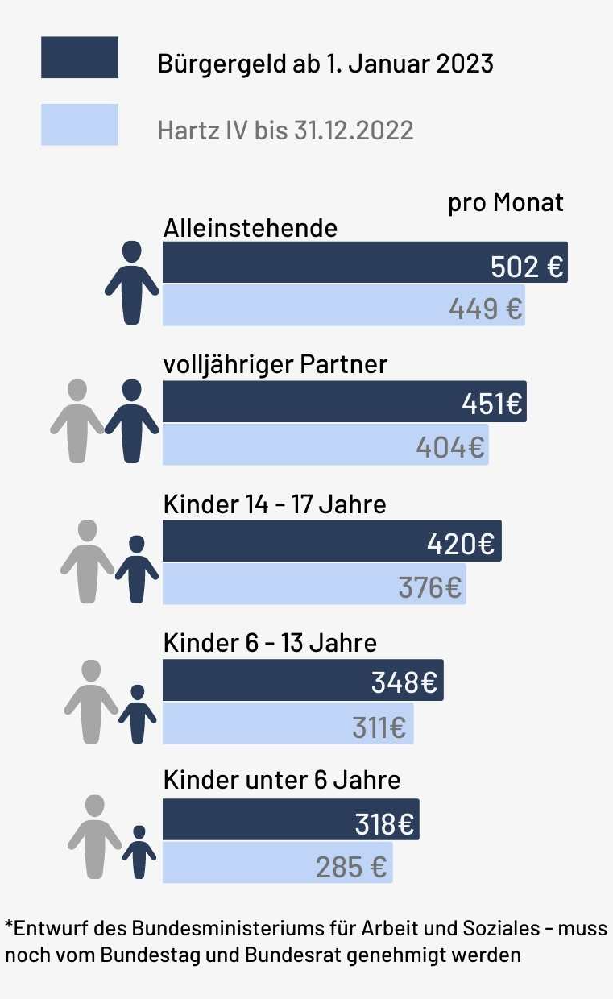

Informationen zum Bürgergeld
06. Dezember 2022 / 8 Minuten zu Lesen
Das Bürgergeld ist eine Sozialreform der Ampelkoalition mit dem Ziel, die vorherige Grundsicherung Hartz-IV abzulösen. Dabei soll das neue System für mehr Respekt und Gerechtigkeit gegenüber Bedürftigen sorgen, wurde allerdings ebenfalls von mehreren Seiten stark kritisiert.

Was ist das Bürgergeld?
“Das Bürgergeld ist ein Grundeinkommen bzw. eine Grundsicherung für erwerbsfähige und bedürftige Menschen. Es handelt sich um eine Form der sozialen, staatlichen Hilfe. Es tritt es an die Stelle des bisherigen Arbeitslosengeldes II, auch bekannt unter dem Namen Hartz IV. Ab dem 1. Januar 2023 wird in Deutschland das Bürgergeld gezahlt. Beim Bürgergeld handelt sich nicht um ein bedingungsloses Bürgergeld oder bedingungsloses Grundeinkommen, sondern um ein Bürgergeld, dessen Zahlung an bestimmte Bedingungen geknüpft ist. Wichtigste Bedingung dabei ist die Bedürftigkeit. Das Bürgergeld stand schon seit längerer Zeit in den Parteiprogrammen der SPD, der Grünen und auch der FDP. Jede Partei stellte sich allerdings eine unterschiedliche Ausgestaltung des Bürgergeldes vor.”
Wer darf Bürgergeld beziehen?
“nur wer erwerbsfähig ist und seinen Lebensunterhalt nicht aus eigenem Einkommen decken kann und andere, vorrangige Leistungen (Arbeitslo sengeld, Wohngeld, Kinderzuschlag etc.) nicht ausreichend sind, erhält Bürgergeld. Die Jobcenter können hierzu beraten. Wer bisher Anspruch auf Arbeitslosengeld II oder Sozialgeld hatte, wird künftig einen Anspruch auf Bürgergeld haben.”
Wann kommt das Bürgergeld?
“Das Bürgergeld-Gesetz tritt zum 1. Januar 2023 in Kraft und wird in zwei Schritten umgesetzt: zum 1. Januar und zum 1. Juli 2023.”
Was ist der jetzige Stand beim Bürgergeld?
Nach einer Kompromisslösung konnte dem Bürgergeld zugestimmt werden, womit es anfang nächsten Jahres HARTZ IV ablösen könnte.